DeskDuck is a little physical duck that sits right there on your desk, with you. It watches your screen time on the apps you choose, and when you go over, it quacks at you, a disappointed little nudge to put the phone down and get back to what you were doing.

How it works
No willpower required, just a small bird with excellent timing.
Choose the time-sinks you want to keep in check, like Instagram, TikTok, YouTube, and the rest.
Decide how long is "too long" for each app. Ten minutes? An hour? You set the line.
Cross the line and your DeskDuck quacks at you, right there on your desk, a disappointed little nudge to put the phone down and get back to it.
Send a warm little quack to someone you care about's duck, just to say you're thinking of them.
Features
Track time on each app individually through the companion phone app, not one blunt daily total.
A different limit for every app. Strict on the doomscroll feeds, lenient where you want it.
An actual quack with character, not a flat buzzer beep that fades into background noise.
Share your duck's code with people you trust and send each other little "thinking of you" quacks, a warmer tone, just for fun.
Why a physical duck
Your phone's own screen-time tools live inside the phone, the exact thing you're trying to put down. A banner slides in, you swipe it away in half a second, and you're back in the feed before you've even registered it.
DeskDuck sits right there on your desk, looking at you. Go over your limit and it quacks out loud, a real sound in the real room, clearly a little disappointed in you. You can't swipe a duck away, so it just keeps gently quacking until you put the phone down and get back to what you were doing. That tiny bit of real-world friction is the whole point.
DeskDuck is in development, not for sale just yet. Join the waitlist and you'll be the first to know when your Duck is ready.
FAQ
DeskDuck is still in development. There's a working prototype, but it isn't manufactured or for sale yet. Join the waitlist and you'll be among the first to know the moment that changes.
The usual time-sinks to start: Instagram, TikTok, YouTube, X, Facebook and Snapchat, with more planned. You pick which ones you want your duck watching.
Yes. DeskDuck connects over 2.4GHz WiFi (the standard band for this kind of device), which is what lets it pair with the app and receive quacks from friends.
Pricing and any ongoing costs are still being decided, to be announced. We don't want to promise a number we can't stand behind yet. Join the waitlist and you'll hear it here first.
You share your duck's code with people you trust, and you can send each other little quacks. It's meant to be light and fun, a quick "thinking of you," not a serious messaging tool, so we're keeping it casual.
DeskDuck is built by a small, dedicated team handling the hardware, the app, and everything in between. We're taking the time to get the quality right, so it's something you can actually rely on. There's more about us just below.
DeskDuck started with a simple, slightly embarrassing problem: we knew exactly how much time we were losing to our phones, and knowing did absolutely nothing. The on-screen limits were too easy to dismiss. So we set out to build a duck that wouldn't let us.
We're a small team putting real care into getting this right, designing the hardware, building the app, and testing it until it's something we'd want on our own desks. We're not rushing it out the door, because we'd rather ship a duck that actually works and that we can stand behind. If the idea makes you smile, join the waitlist and we'll keep you posted.